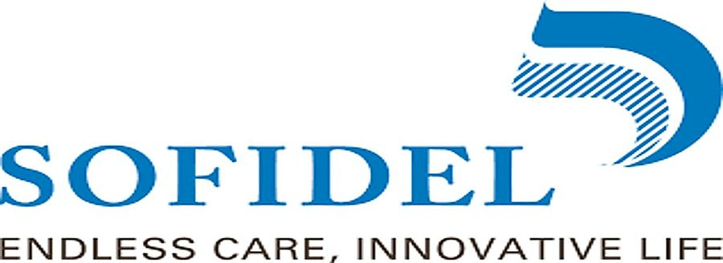
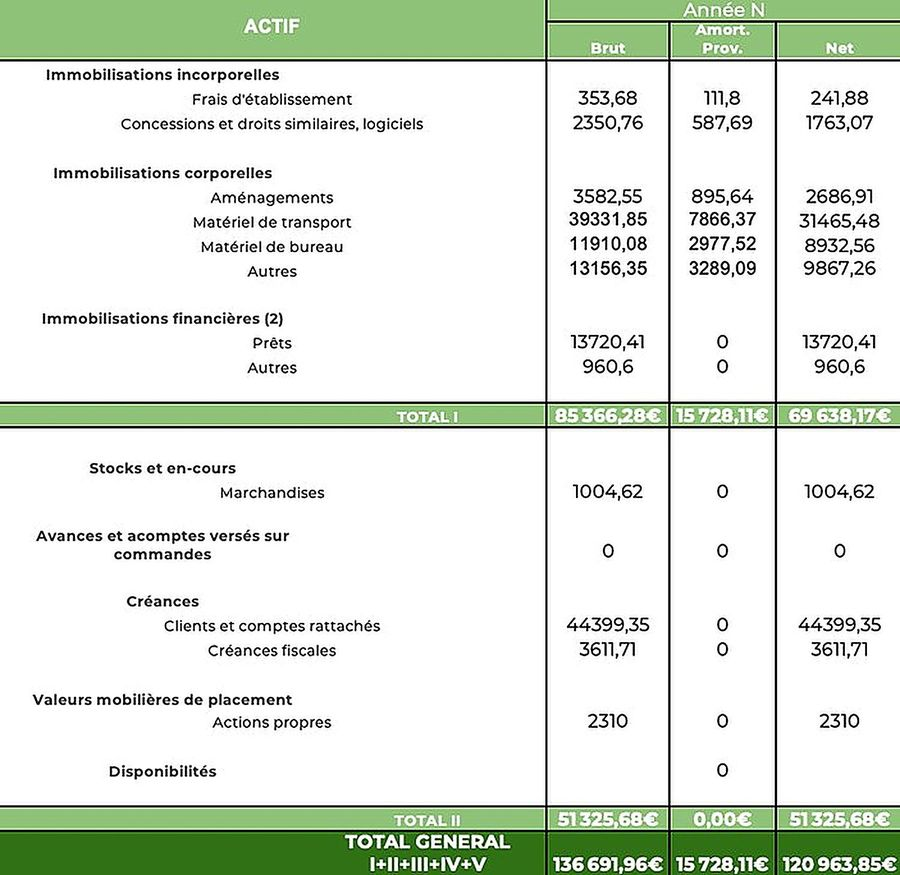
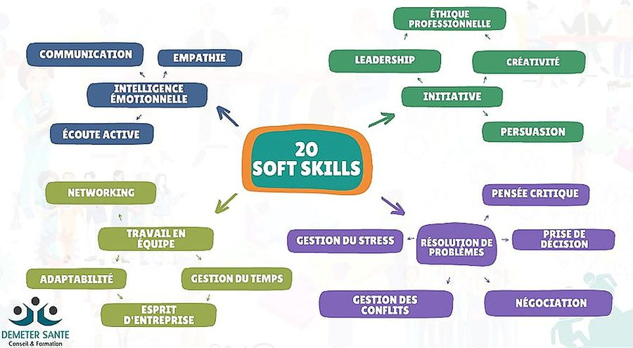
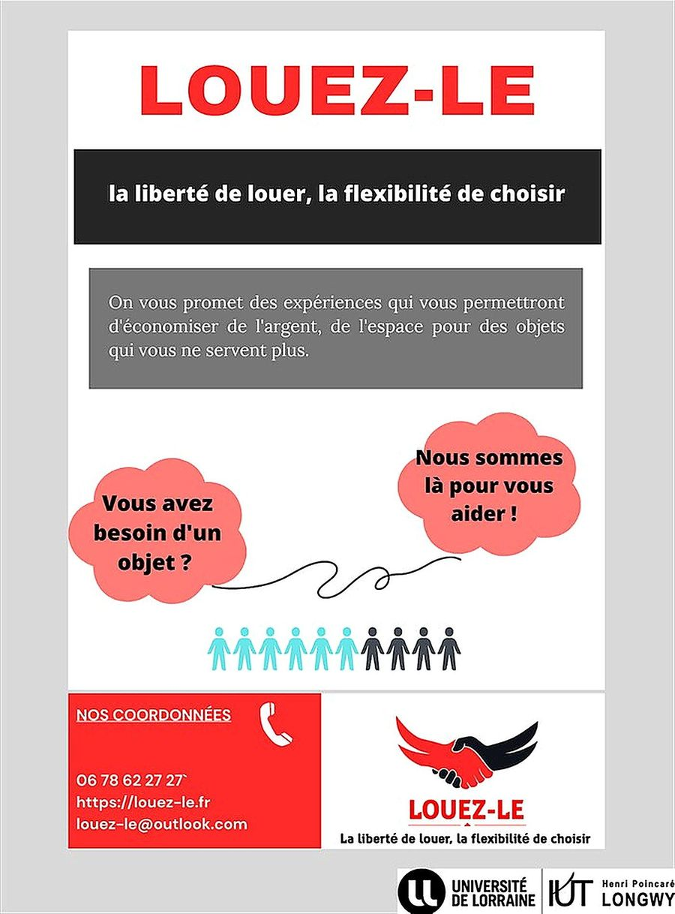
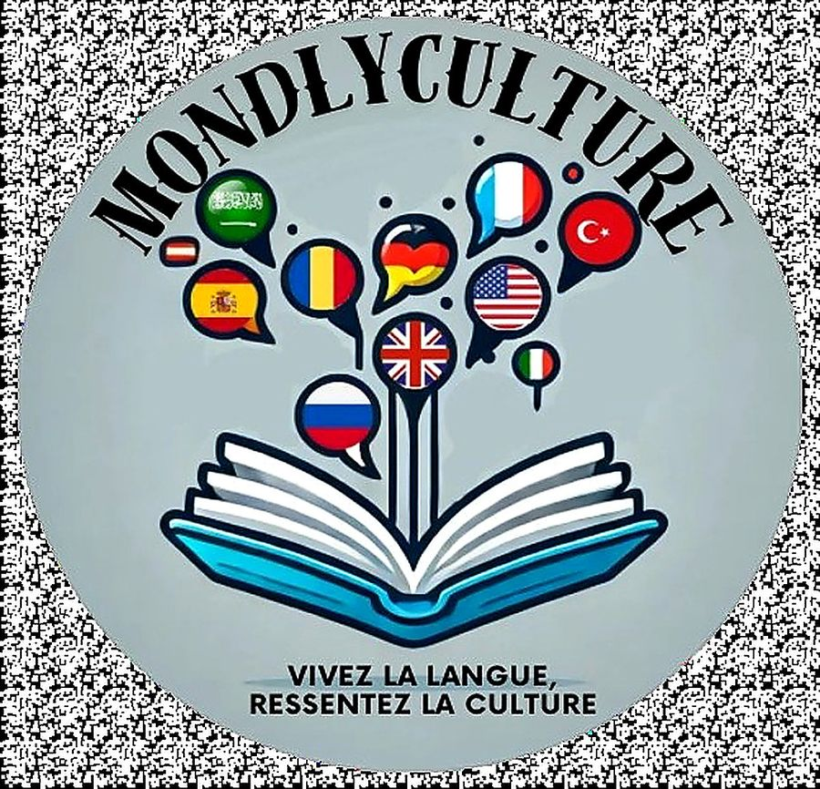
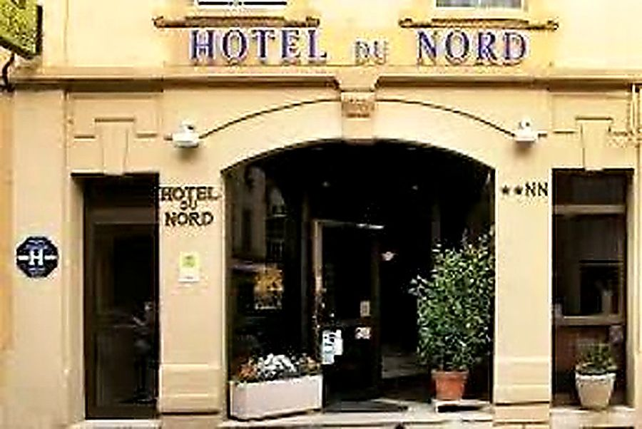
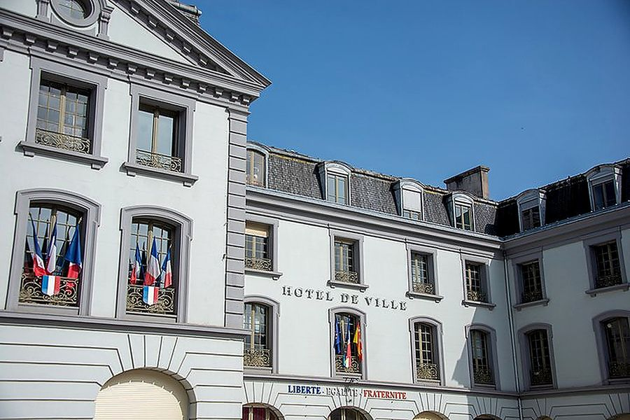
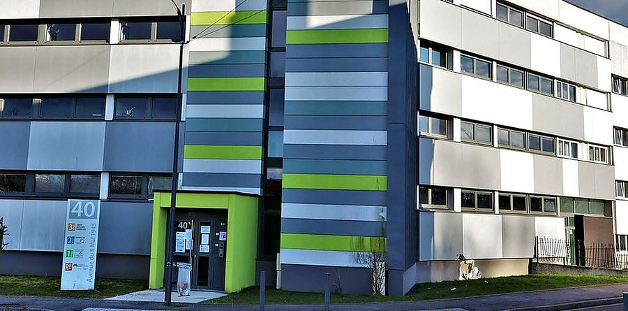
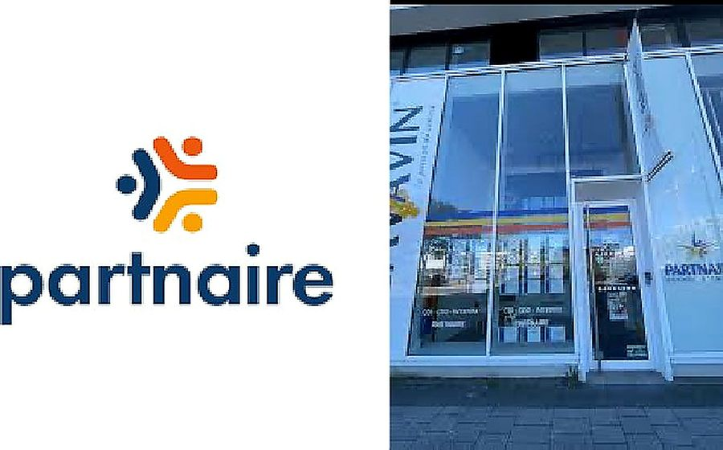
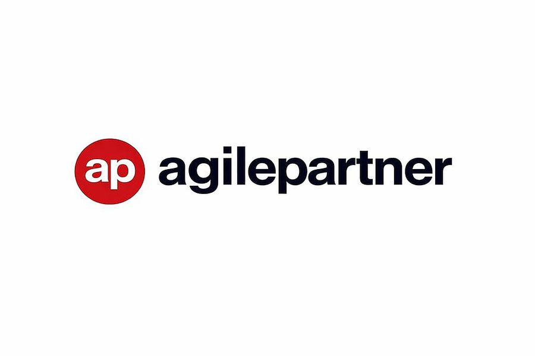

Sofian Dupre
BUT Gestion des Entreprises et des Administrations
Parcours Entrepreneuriat & Management d’Activité
Trois années de formation, douze projets menés en équipe et quatre stages — de la collectivité territoriale à l’entreprise de services du numérique. Je m’oriente aujourd’hui vers le recrutement et les ressources humaines au Luxembourg.
Douze projets, douze terrains réels.
Chaque situation d’apprentissage part d’une commande concrète et se conclut par un livrable professionnel : dossier stratégique, business plan, plan de transformation ou stratégie de communication.

Sofidel — situer une organisation
Décrire l’environnement d’une entreprise et identifier l’enjeu majeur auquel elle devra faire face.
Voir l’étude de cas
BIONATURE — créer une entreprise fictive
Création d’une entreprise fictive et simulation de ses résultats sur un an : bilan et compte de résultat prévisionnels.
Voir l’étude de cas
Posture professionnelle — identifier ses qualités
Travail sur les vingt soft skills et construction d’une posture professionnelle adaptée au monde du travail.
Voir l’étude de cas
Louez-Le — Business Game
Coopération en équipe autour d’un projet de location, avec production de supports de communication.
Voir l’étude de cas
MondlyCulture — créer une entreprise
Application mobile d’apprentissage immersif des langues couplé à la découverte des cultures étrangères.
Voir l’étude de cas
Hôtel du Nord — développer une activité
Diagnostic stratégique complet et propositions de développement pour un hôtel 3 étoiles de Longwy.
Voir l’étude de casQuatre stages, quatre environnements.
La collectivité territoriale, l’action sociale, l’agence de recrutement et l’entreprise de services du numérique — du droit administratif au développement commercial, puis au recrutement de profils IT.

Mairie de Longwy — service juridique
Assistant juridique
Découvrir
CCAS de Longwy
Assistant administratif, comptable et social
Découvrir
Partnaire Luxembourg — agence de Belval
Stagiaire commercial — développement et recrutement
Découvrir
Agile Partner — Kockelscheuer
Talent Acquisition & Sourcing IT
DécouvrirLe recrutement, par choix.
Le CCAS de Longwy m’a fait découvrir la gestion du personnel dans le secteur public. Partnaire m’a formé au recrutement en agence d’intérim. Agile Partner m’a confié le sourcing de profils IT et l’intégration de l’intelligence artificielle dans le processus. C’est ce fil que je veux suivre.
En savoir plus sur mon parcoursÀ partir de 2026
Master Management des Ressources Humaines — IMC Luxembourg.
- Objectif : exercer dans les ressources humaines au Luxembourg
- Cibles : chargé de recrutement, talent acquisition, RH généraliste
- Atouts : deux stages déjà réalisés au Luxembourg, anglais professionnel
- Horizon : créer ma propre activité de conseil RH